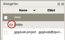
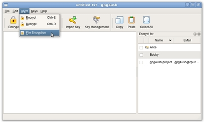
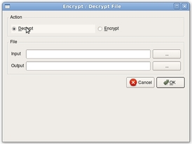
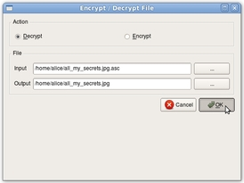
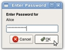
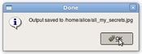

Cómo descifrar un archivo
NOTA: Usted sólo puede descifrar archivos si tiene una llave privada y el archivo está cifrado con ella. Usted puede identificar las llaves privadas por la imagen 'manojo de llaves' que está enfrente del nombre en el listado de llaves (en este ejemplo es Bobby):

Hay cinco pasos para descifrar un archivo. Supongamos que Alice quiere descifrar un archivo que ha sido cifrado para ella (es decir, se escogió su llave cuando se cifró).
PASO 1: Abrir el menú 'Cifrar'

PASO 2: Escoger descifrar archivo
Segundo, ella escoge 'Descifrar archivo'.

PASO 3: Escoger el archivo de entrada/salida
Ahora, ella escoge el archivo de entrada/salida. El archivo de entrada ha de ser el archivo cifrado.

PASO 4: Pulsar OK
Ahora ella pulsa en botón 'OK'.

PASO 5: Introducir la contraseña
Ella introduce la contraseña de su llave y pulsa el botón 'OK'.

Después aparece un mensaje 'ok'
